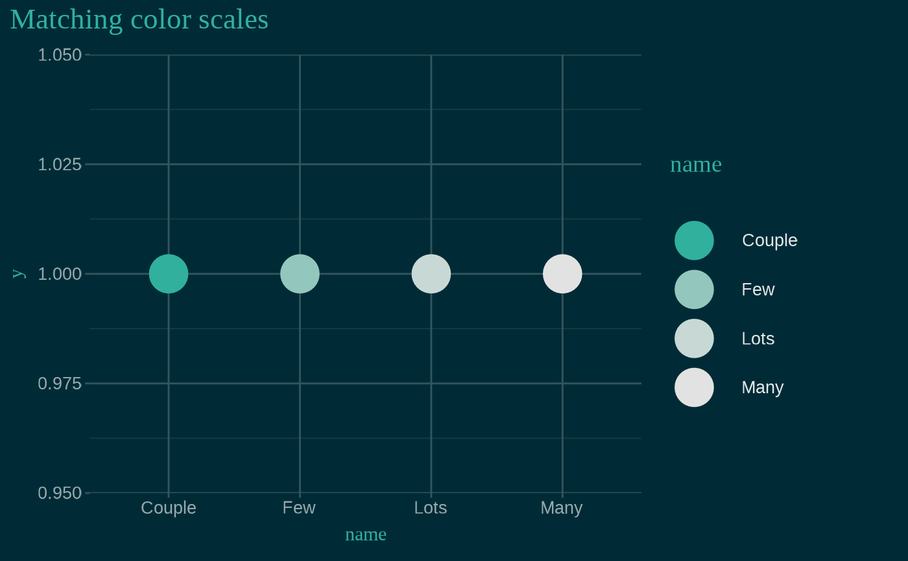

![[Maturing]](figures/lifecycle-maturing.svg)
Color and fill single-color scales for discrete and continuous values,
created using the primary accent color of the xaringanthemer styles. See
vignette("ggplot2-themes") for more information and examples of
xaringanthemer's ggplot2-related functions.
scale_xaringan_discrete( aes_type = c("color", "colour", "fill"), ..., color = NULL, direction = 1, inverse = FALSE ) scale_xaringan_fill_discrete(..., color = NULL, direction = 1, inverse = FALSE) scale_xaringan_color_discrete( ..., color = NULL, direction = 1, inverse = FALSE ) scale_xaringan_colour_discrete( ..., color = NULL, direction = 1, inverse = FALSE ) scale_xaringan_continuous( aes_type = c("color", "colour", "fill"), ..., color = NULL, begin = 0, end = 1, inverse = FALSE ) scale_xaringan_fill_continuous( ..., color = NULL, begin = 0, end = 1, inverse = FALSE ) scale_xaringan_color_continuous( ..., color = NULL, begin = 0, end = 1, inverse = FALSE ) scale_xaringan_colour_continuous( ..., color = NULL, begin = 0, end = 1, inverse = FALSE )
Arguments
| aes_type | The type of aesthetic to which the scale is being applied. One of "color", "colour", or "fill". |
|---|---|
| ... | Arguments passed on to either the colorspace scale
functions — one of |
| color | A color value, in hex, to override the default color. Otherwise, the primary color of the resulting scale is chosen from the xaringanthemer slide styles. |
| direction | Direction of the discrete scale. Use values less than 0 to
reverse the direction, e.g. |
| inverse | If |
| begin | Number in the range of |
| end | Number in the range of |
Examples
# Requires ggplot2 has_ggplot2 <- requireNamespace("ggplot2", quietly = TRUE) if (has_ggplot2) { library(ggplot2) # Saving the theme to a temp file because this is an example path_to_css_file <- tempfile(fileext = ".css") # Create the xaringan theme: dark blue background with teal green accents style_duo( primary_color = "#002b36", secondary_color = "#31b09e", # Using basic fonts for this example, but the plot theme will # automatically use your theme font if you use Google fonts text_font_family = "sans", header_font_family = "serif", outfile = path_to_css_file ) # Here's some very basic example data ex <- data.frame( name = c("Couple", "Few", "Lots", "Many"), n = c(2, 3, 5, 7) ) # Fill color scales demo ggplot(ex) + aes(name, n, fill = n) + geom_col() + ggtitle("Matching fill scales") + # themed to match the slides: dark blue background with teal text theme_xaringan() + # Fill color matches teal text scale_xaringan_fill_continuous() # Color scales demo ggplot(ex) + aes(name, y = 1, color = name) + geom_point(size = 10) + ggtitle("Matching color scales") + # themed to match the slides: dark blue background with teal text theme_xaringan() + # Fill color matches teal text scale_xaringan_color_discrete(direction = -1) }